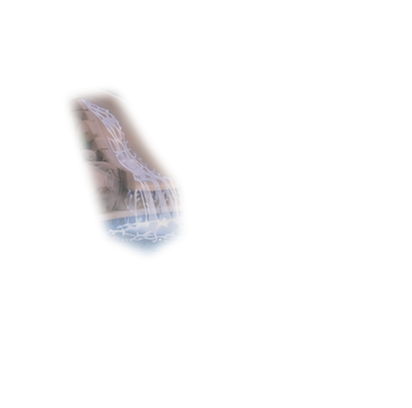
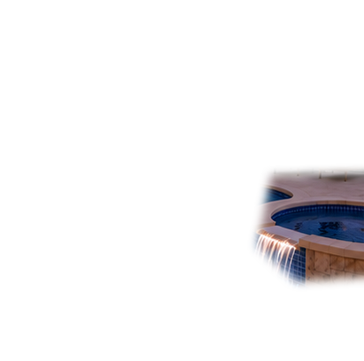
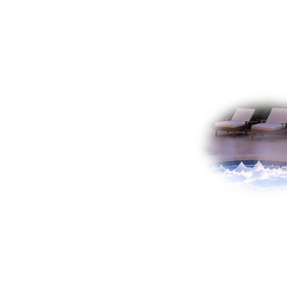
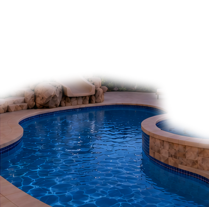
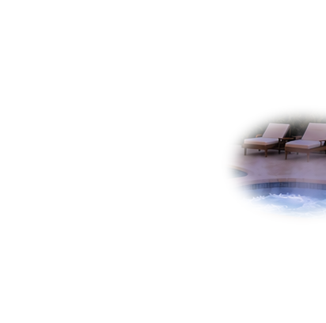
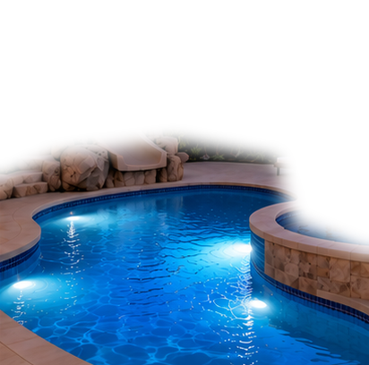
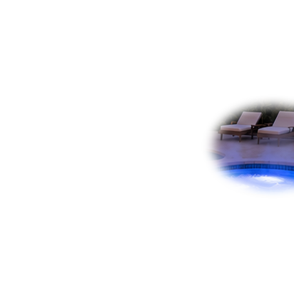

Static Photo State Lab (offline, no HA connection)Local visual testing only. No equipment commands, API, cookies, or PIN.Static ON images will appear when their transparent photographic layers are supplied. Missing layers remain hidden.